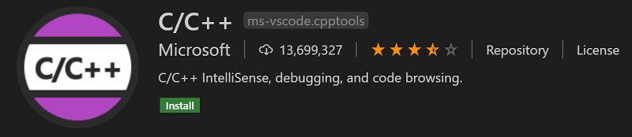
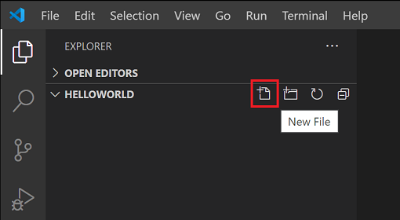
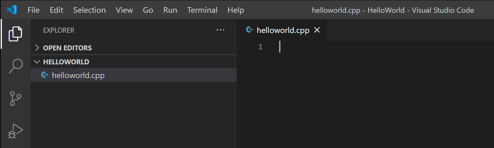
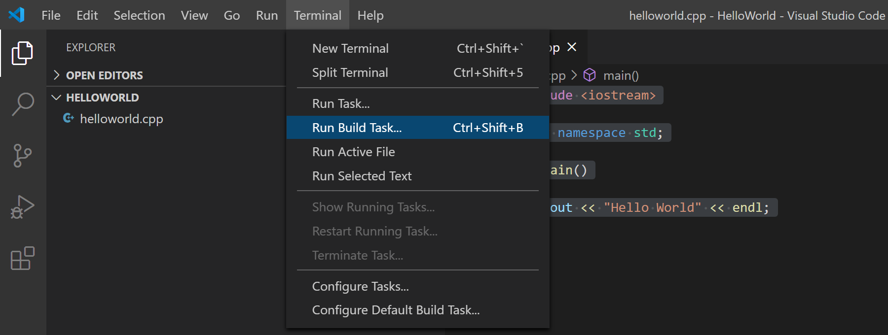
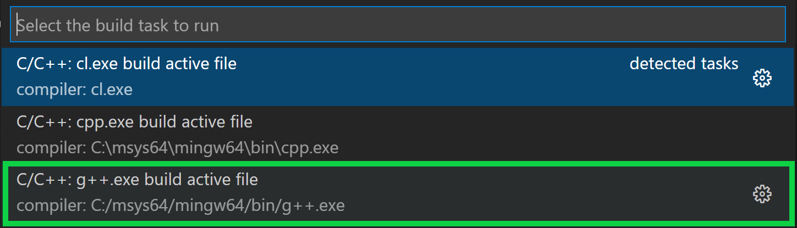
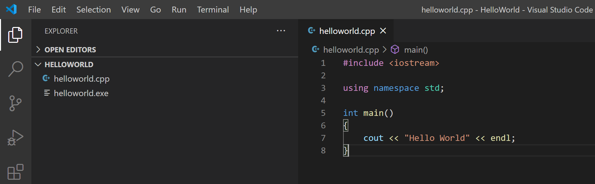
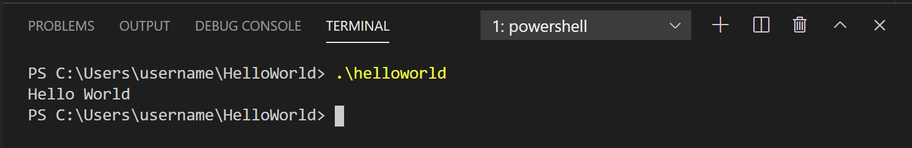
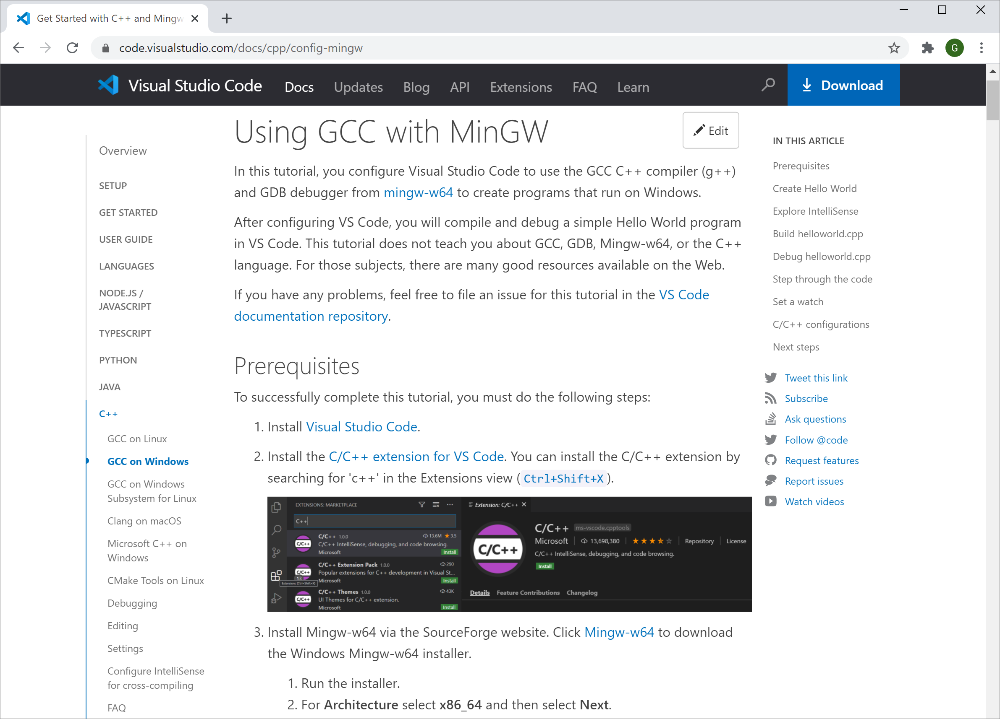

C/C++ for Visual Studio Code
C/C++ support for Visual Studio Code is provided by a Microsoft C/C++ extension to enable cross-platform C and C++ development on Windows, Linux, and macOS.

Install the extension
- Open VS Code.
- Select the Extensions view icon on the Activity bar or use the keyboard shortcut (
kb(workbench.view.extensions)). - Search for
'C++'. - Select Install.

After you install the extension, when you open or create a *.cpp file, you will have syntax highlighting (colorization), smart completions and hovers (IntelliSense), and error checking.

Install a compiler
C++ is a compiled language meaning your program's source code must be translated (compiled) before it can be run on your computer. VS Code is first and foremost an editor, and relies on command-line tools to do much of the development workflow. The C/C++ extension does not include a C++ compiler or debugger. You will need to install these tools or use those already installed on your computer.
There may already be a C++ compiler and debugger provided by your academic or work development environment. Check with your instructors or colleagues for guidance on installing the recommended C++ toolset (compiler, debugger, project system, linter).
Some platforms, such as Linux or macOS, have a C++ compiler already installed. Most Linux distributions have the GNU Compiler Collection (GCC) installed and macOS users can get the Clang tools with Xcode.
Check if you have a compiler installed
Make sure your compiler executable is in your platform path (%PATH on Windows, $PATH on Linux and macOS) so that the C/C++ extension can find it. You can check availability of your C++ tools by opening the Integrated Terminal (kb(workbench.action.terminal.toggleTerminal)) in VS Code and trying to directly run the compiler.
Checking for the GCC compiler g++:
g++ --version
Checking for the Clang compiler clang:
clang --version
Note: If you would prefer a full Integrated Development Environment (IDE), with built-in compilation, debugging, and project templates (File > New Project), there are many options available, such as the Visual Studio Community edition.
If you don't have a compiler installed, in the example below, we describe how to install the Minimalist GNU for Windows (MinGW) C++ tools (compiler and debugger). MinGW is a popular, free toolset for Windows. If you are running VS Code on another platform, you can read the C++ tutorials, which cover C++ configurations for Linux and macOS.
Example: Install MinGW-x64
We will install Mingw-w64 via MSYS2, which provides up-to-date native builds of GCC, Mingw-w64, and other helpful C++ tools and libraries. Click here to download the MSYS2 installer. Then follow the instructions on the MSYS2 website to install Mingw-w64.
Add the MinGW compiler to your path
Add the path to your Mingw-w64 bin folder to the Windows PATH environment variable by using the following steps:
- In the Windows search bar, type 'settings' to open your Windows Settings.
- Search for Edit environment variables for your account.
- Choose the
Pathvariable and then select Edit. - Select New and add the Mingw-w64 destination folder path, with
\mingw64\binappended, to the system path. The exact path depends on which version of Mingw-w64 you have installed and where you installed it. If you used the settings above to install Mingw-w64, then add this to the path:C:\msys64\mingw64\bin. - Select OK to save the updated PATH. You will need to reopen any console windows for the new PATH location to be available.
Check your MinGW installation
To check that your Mingw-w64 tools are correctly installed and available, open a new Command Prompt and type:
g++ --version
gdb --version
If you don't see the expected output or g++ or gdb is not a recognized command, make sure your PATH entry matches the Mingw-w64 binary location where the compiler tools are located.
Hello World
To make sure the compiler is installed and configured correctly, we'll create the simplest Hello World C++ program.
Create a folder called "HelloWorld" and open VS Code in that folder (code . opens VS Code in the current folder):
mkdir HelloWorld
cd HelloWorld
code .
Now create a new file called helloworld.cpp with the New File button in the File Explorer or File > New File command.


Add Hello World source code
Now paste in this source code:
#include <iostream>
using namespace std;
int main()
{
cout << "Hello World" << endl;
}
Now press kb(workbench.action.files.save) to save the file. You can also enable Auto Save to automatically save your file changes, by checking Auto Save in the main File menu.
Build Hello World
Now that we have a simple C++ program, let's build it. Select the Terminal > Run Build Task command (kb(workbench.action.tasks.build)) from the main menu.

This will display a dropdown with various compiler task options. If you are using a GCC toolset like MinGW, you would choose C/C++: g++.exe build active file.

This will compile helloworld.cpp and create an executable file called helloworld.exe, which will appear in the File Explorer.

Run Hello World
From a command prompt or a new VS Code Integrated Terminal, you can now run your program by typing ".\helloworld".

If everything is set up correctly, you should see the output "Hello World".
This has been a very simple example to help you get started with C++ development in VS Code. The next step is to try one of the tutorials listed below on your platform (Windows, Linux, or macOS) with your preferred toolset (GCC, Clang, Microsoft C++) and learn more about the Microsoft C/C++ extension's language features such as IntelliSense, code navigation, build configuration, and debugging.
Tutorials
Get started with C++ and VS Code with tutorials for your environment:
- GCC on Windows via MinGW
- Microsoft C++ on Windows
- GCC on Linux
- GCC on Windows Subsystem For Linux
- Clang/LLVM on macOS
- CMake Tools on Linux
Documentation
You can find more documentation on using the Microsoft C/C++ extension under the C++ section of the VS Code website, where you'll find topics on:

Remote Development
VS Code and the C++ extension support Remote Development allowing you to work over SSH on a remote machine or VM, inside a Docker container, or in the Windows Subsystem for Linux (WSL).
To install support for Remote Development:
- Install the VS Code Remote Development Extension Pack.
- If the remote source files are hosted in WSL, use the Remote - WSL extension.
- If you are connecting to a remote machine with SSH, use the Remote - SSH extension.
- If the remote source files are hosted in a container (for example, Docker), use the Remote - Containers extension.
Feedback
If you run into any issues or have suggestions for the Microsoft C/C++ extension, please file issues and suggestions on GitHub. If you haven't already provided feedback, please take this quick survey to help shape this extension for your needs.